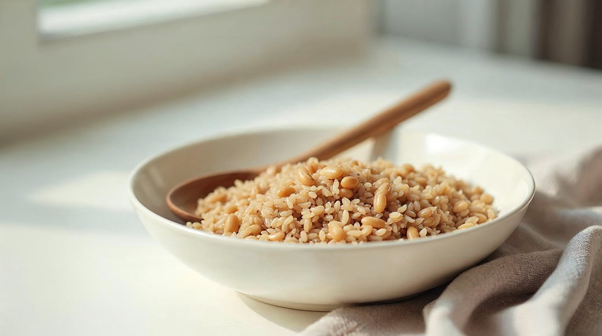
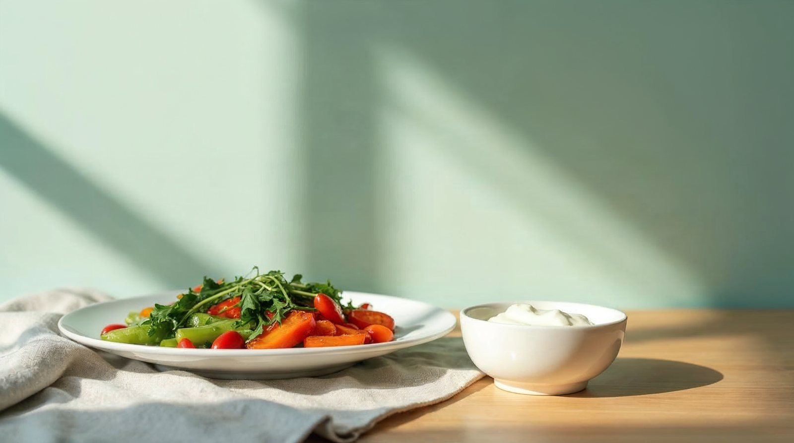
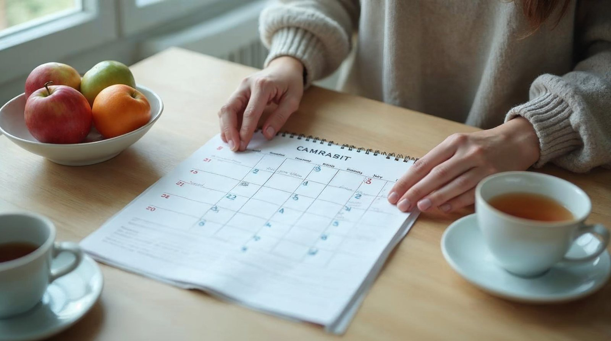
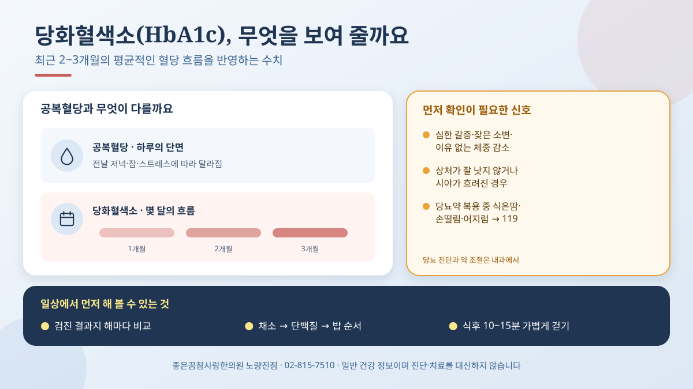

이종호 한의사 감수좋은꿈참사랑한의원 대표원장 (한의사 면허번호 19769)발행 2026-11-23 · 수정 2026-11-26
이 글의 차례
- 왜 공복혈당과 함께 보나요
- 숫자는 이렇게 읽습니다
- 숫자가 실제와 다르게 나올 수 있는 경우가 있나요?
- 공복혈당·식후혈당과는 무엇이 다른가요?
- 먼저 이렇게 여쭙니다
- 스스로 점검해 보세요
- 일상에서 먼저 해 볼 수 있는 것
- 예를 들면 이런 경우입니다
- 두세 달 동안 생활을 바꾼다면 어떤 순서가 좋을까요?
- 집에서는 이렇게 기록해 보세요
- 얼마나 지켜보고 언제 상담할까요
- 왜 같은 식사를 해도 사람마다 숫자가 다를까요?
- 한의원에서 함께 살필 수 있는 경우
- 진료실에서 숫자를 이렇게 함께 봅니다
- 한약을 상담할 때는 무엇을 확인하나요?
- 가족이 함께 바꾸면 덜 힘듭니다
- 이렇게 기록해 오시면 상담이 쉬워집니다
- 이런 증상은 먼저 확인이 필요합니다
- 관련 글
당화혈색소(HbA1c)는 핏속 적혈구의 혈색소에 포도당이 얼마나 붙어 있는지를 보는 수치로, 최근 2~3개월 동안의 평균적인 혈당 흐름을 반영합니다. 검사 전날의 식사나 잠에 따라 흔들리기 쉬운 공복혈당과 달리 몇 달의 생활 리듬을 비춰 보는 지표라, 검진 결과지에서 함께 확인해 두시길 권합니다.
먼저 분명히 해 둘 점이 있습니다. 당뇨의 진단과 약 처방·조절은 내과의 몫입니다. 한의원에서는 숫자가 나오기까지의 식사·잠·활동 리듬을 함께 살피고, 진단이나 약 판단이 필요해 보이면 내과 진료를 먼저 안내합니다.
왜 공복혈당과 함께 보나요
- 공복혈당은 검사 전날 저녁, 잠, 스트레스에 따라 날마다 달라질 수 있습니다.
- 당화혈색소는 적혈구가 몸속에 머무는 기간 동안의 흐름을 반영해 몇 달의 생활 습관을 비춰 보는 데 쓰입니다.
- 빈혈이 있거나 일부 질환이 있으면 실제 혈당 흐름과 다르게 나올 수 있어 다른 검사와 함께 해석합니다.

숫자는 이렇게 읽습니다
- 널리 쓰이는 일반 기준으로는 5.7% 미만을 정상 범위, 5.7~6.4%를 당뇨병 전단계, 6.5% 이상을 당뇨병 진단 기준 가운데 하나로 봅니다.
- 6.5% 이상이 한 번 나왔다고 진단이 바로 정해지지는 않으며, 내과에서 공복혈당 같은 다른 검사나 다시 한 검사로 확인합니다.
- 기준 범위와 표시 방식은 검사 기관마다 조금 다를 수 있어, 결과지에 적힌 검사 기관의 참고치를 따릅니다.
- 작은 차이는 검사마다 조금씩 달라질 수 있어 한 번의 숫자보다 해마다의 흐름을 함께 봅니다.
- 당뇨약을 드시는 분의 목표 수치는 나이와 건강 상태에 따라 달라 담당 내과 의사와 정합니다.
숫자가 실제와 다르게 나올 수 있는 경우가 있나요?
당화혈색소는 적혈구에 붙은 당을 보는 검사라, 적혈구의 수명이나 상태가 달라지면 실제 혈당 흐름과 어긋나게 나올 수 있다고 알려져 있습니다. 빈혈이 있는 경우, 최근 피를 많이 흘렸거나 수혈을 받은 경우, 임신 중인 경우가 대표적입니다.
신장 기능이 많이 떨어진 경우나 혈색소에 타고난 차이가 있는 경우에도 해석이 달라질 수 있습니다. 이런 경우에는 내과에서 공복혈당이나 다른 혈당 검사를 함께 보고 판단합니다.
그래서 저는 숫자를 보기 전에 빈혈 이야기를 들은 적이 있는지, 최근 큰 수술이나 출혈이 있었는지, 임신 가능성이 있는지를 여쭙습니다. 해당한다면 숫자 하나만으로 생활 계획을 세우지 않고, 담당 내과의 해석을 먼저 확인하시도록 안내합니다.
공복혈당·식후혈당과는 무엇이 다른가요?
- 공복혈당: 밤사이 굶은 뒤 잰 그 순간의 혈당이라, 전날 저녁과 잠의 영향을 받습니다.
- 식후혈당: 식사 뒤 일정 시간이 지나 잰 혈당이라, 그 끼니의 양과 종류, 식사 속도가 드러납니다.
- 당화혈색소: 두세 달 동안의 평균적인 흐름이라, 어느 하루보다 그 기간의 생활 습관을 비춰 봅니다.
예를 들어 공복혈당은 괜찮은데 당화혈색소가 경계선이라면 식사 뒤 혈당이 자주 오르는 생활일 수 있어, 저는 점심과 저녁의 밥 양, 식후 단 음료, 식사 뒤 바로 앉아 있는 습관을 먼저 여쭙습니다. 정확한 해석은 내과에서 다른 검사와 함께 합니다.
먼저 이렇게 여쭙니다
- 건강검진에서 혈당 관련 수치를 들은 적이 있나요?
- 가족 중 당뇨가 있는 분이 있나요?
- 최근 갈증이 늘거나 소변을 자주 보시나요?
- 현재 드시는 약이 있나요?
- 식사 시간과 단 음료, 간식은 어떤 편인가요?
스스로 점검해 보세요
- 최근 2~3년 검진 결과지에서 당화혈색소나 공복혈당 숫자를 찾아본 적이 있다
- 그 숫자가 해마다 조금씩 오르고 있다
- 부모나 형제 가운데 당뇨를 진단받은 분이 있다
- 단 음료나 믹스커피를 하루 두 번 넘게 마신다
- 저녁 식사가 늦거나 야식을 자주 먹는다
- 식후에 참기 어려운 졸음이 자주 온다
- 잠드는 시각이 들쭉날쭉하고 따로 걷는 시간이 거의 없다
해당하는 항목이 많다면 다음 검진을 기다리기보다 생활 리듬부터 점검해 보세요.
일상에서 먼저 해 볼 수 있는 것
- 검진 결과지를 버리지 말고 해마다 비교하기
- 식사 순서를 채소, 단백질, 밥 순으로 바꿔 보기
- 식후 10~15분 가볍게 걷기
- 단 음료와 간식 횟수 줄이기
- 잠드는 시각을 일정하게 지키기
예를 들면 이런 경우입니다
- 예를 들어 야근이 잦아 밤늦게 저녁을 먹는 직장인이 검진에서 경계선 숫자를 처음 들은 경우라면, 저녁 시간을 조금 앞당기고 식후 걷기를 더하는 것부터 함께 정합니다.
- 예를 들어 당뇨약을 드시는 어르신이 겨울 들어 걷는 양이 줄고 숫자가 올랐다는 이야기를 들은 경우라면, 약 조절은 처방한 내과와 상의하시도록 하고 한의원에서는 실내 활동량과 식사·잠의 리듬을 함께 살핍니다.
- 예를 들어 아이를 키우며 끼니를 거르다 저녁에 몰아 먹는 육아 중인 분이라면, 사흘 정도 식사 시간을 적어 보는 것부터 시작해 끼니 간격을 함께 정리합니다.
두세 달 동안 생활을 바꾼다면 어떤 순서가 좋을까요?
한꺼번에 다 바꾸려 하면 몇 주 만에 지치기 쉽습니다. 저는 두세 달을 세 단계로 나누어 보시라고 권합니다. 첫 달에는 단 음료와 믹스커피처럼 가장 자주 반복되는 한 가지를 줄이는 데 집중합니다.
둘째 달에는 저녁 식사 시각을 앞당기거나 식후 10분 걷기를 더합니다. 셋째 달에는 잠드는 시각을 일정하게 맞추는 데 마음을 씁니다. 잠이 짧고 들쭉날쭉하면 다음 날 단 것이 당기는 분이 많기 때문입니다.
각 단계를 지키기 어려웠다면 실패로 여기지 마시고, 무엇이 걸렸는지를 적어 오세요. 회식, 야근, 아이 돌봄처럼 피하기 어려운 사정이 보이면 그 사정에 맞게 목표를 다시 작게 나눕니다.

집에서는 이렇게 기록해 보세요
공책에 날짜별로 세 줄만 적으면 됩니다. 첫 줄은 끼니 시각과 밥 양, 둘째 줄은 단 음료·간식, 셋째 줄은 걸은 시간과 잠든 시각입니다. 집에서 혈당을 재신다면 잰 시각과 숫자를 옆에 붙여 두세요.
일주일 기록을 펼쳐 놓고 보면 어느 요일, 어느 시간대에 단 것이 몰리는지 스스로도 보이는 경우가 많습니다. 진료 때 이 기록을 함께 보며 다음 두세 달의 목표를 정합니다.

얼마나 지켜보고 언제 상담할까요
- 경계선 수치를 처음 들었다면 식사·간식·식후 걷기 가운데 한두 가지를 정해 몇 주 이어 가며 기록해 보세요. 두세 달의 흐름을 반영하는 수치라 한두 주 만에 다시 재기보다 담당 의사가 정한 간격에 맞춰 확인합니다.
- 6.5% 이상이 나왔거나 재검을 권유받았다면 생활 정리와 별개로 내과 진료를 먼저 받으세요.
- 당뇨약·인슐린을 쓰는 중 식은땀·손떨림·어지럼이 생기면, 처방받을 때 들은 저혈당 대처법대로 바로 당분을 드세요.
왜 같은 식사를 해도 사람마다 숫자가 다를까요?
같은 밥 한 공기를 먹어도 혈당이 오르는 정도는 사람마다 다릅니다. 근육량이 적고 앉아 지내는 시간이 길면 먹은 당을 몸이 쓰는 속도가 느려지고, 잠이 짧거나 스트레스가 큰 시기에도 혈당이 쉽게 오르는 경향이 있다고 알려져 있습니다.
가족 가운데 당뇨가 있는 분은 같은 생활에서도 숫자가 먼저 오르기도 합니다. 그래서 저는 식사 이야기와 함께 근육량, 잠, 가족력을 묶어서 여쭙고, 필요하다고 판단될 때 인바디로 체성분을 함께 봅니다.
예를 들어 체중은 그대로인데 근육이 적게 나온 분이라면 식사량을 줄이기보다 식후 걷기나 계단처럼 근육을 쓰는 시간을 늘리는 쪽을 먼저 권합니다. 몸이 당을 쓰는 곳을 넓혀 주는 셈입니다.
한의원에서 함께 살필 수 있는 경우
- 당화혈색소가 경계선이라 생활 습관을 점검하고 싶은 경우 식사·잠·활동 리듬을 함께 살핍니다.
- 필요하다고 판단될 때 당화혈색소를 확인하고 지난 기록과 비교해 봅니다.
- 식후 졸음이나 소화, 잠처럼 숫자 밖의 불편이 함께 신경 쓰이는 경우 몸 전체의 리듬을 함께 살핍니다.
좋은꿈참사랑한의원에서는 모든 분께 맥부터 짚습니다. 맥을 짚으면서 식사·간식·잠·활동을 여쭙고, 가져오신 검진 결과지와 드시는 약을 함께 본 뒤 혀와 배를 살핍니다.
필요하다고 판단될 때 원내 당화혈색소 검사기와 인바디 770으로 숫자를 확인해 지난 기록과 비교합니다. 검사 숫자는 진단이 아니라 생활 리듬의 흐름을 함께 보는 참고 자료로 쓰고, 그 흐름을 바탕으로 식사 계획과 한약 상담 등 생활에서 먼저 바꿀 것을 정합니다.
원내 검사의 비용이나 보험 적용 여부는 방문 전 전화로 확인해 주세요.
진료실에서 숫자를 이렇게 함께 봅니다
검진 결과지를 가져오시면 저는 당화혈색소 한 칸만 보지 않고, 같은 결과지의 공복혈당과 중성지방, 간 수치, 허리둘레를 함께 봅니다. 혈당과 관련된 생활 습관은 이 항목들에도 함께 드러나는 경우가 많기 때문입니다.
지난해 결과지가 있다면 연도별로 숫자를 나란히 적어 흐름을 봅니다. 한 해만 유독 높게 나왔다면 그해에 이사나 이직, 돌봄처럼 무엇이 달랐는지부터 함께 떠올려 봅니다.
이야기를 다 들은 뒤에는 생활 목표를 한두 가지로 좁히고, 다음에 무엇을 확인할지 정합니다. 목표가 많으면 지키기 어렵고, 하나를 지켜 본 경험이 다음 목표를 정하는 바탕이 되기 때문입니다.
한약을 상담할 때는 무엇을 확인하나요?
혈당이 걱정되는 분이 식후 졸음, 소화 불편, 잠, 피로처럼 숫자 밖의 불편을 함께 호소하시면 생활 계획과 함께 한약 상담을 하기도 합니다. 한약은 당뇨약을 대신하는 방법이 아니며, 몸 전체의 리듬을 함께 살피는 데 씁니다.
상담할 때는 드시는 당뇨약과 혈압약, 건강기능식품을 모두 확인하고, 최근 결과지의 간·신장 수치도 참고합니다. 한약을 드시는 동안에도 내과에서 정한 혈당 확인 일정은 그대로 지켜 주세요.
임신 중이거나 임신을 준비하고 계신다면 먼저 말씀해 주시고, 산부인과와도 함께 상의해 주세요. 임신 중의 혈당 관리는 산부인과와 내과의 안내가 먼저입니다.
가족이 함께 바꾸면 덜 힘듭니다
단 음료나 늦은 저녁은 혼자만 바꾸려 하면 식탁에서 쉽게 무너집니다. 집에 두는 음료를 물이나 보리차로 바꾸고, 저녁 시간을 가족과 함께 조금 앞당기는 것처럼 집안의 습관으로 정하면 훨씬 수월합니다.
가족 가운데 당뇨가 있는 분이 계시다면 다른 가족도 함께 검진 결과지를 챙겨 보시길 권합니다. 같은 식탁에서 같은 습관을 나누는 경우가 많아, 함께 점검하면 서로에게 도움이 됩니다.
예를 들어 부부가 함께 저녁 뒤 15분 걷기를 정해 두면, 한 사람이 바쁜 날에도 다른 사람이 챙겨 주어 습관이 덜 끊깁니다. 아이가 있는 집이라면 간식 서랍에 단 과자 대신 과일을 두는 것도 함께 해 볼 만합니다. 진료 때 가족이 함께 바꾼 습관을 알려 주시면 그 습관을 기준으로 다음 목표를 정합니다.
이렇게 기록해 오시면 상담이 쉬워집니다
- 최근 2~3년의 건강검진 결과지
- 하루 식사 시간과 간식·음료
- 집에서 잰 혈당 기록(있다면)
- 드시는 약 전체
경계선이라는 말을 듣고 밤늦게까지 검색창을 붙들고 계셨을지도 모르겠습니다. 당화혈색소는 지난 두세 달을 비춘 숫자이고, 다음 두세 달을 어떻게 지낼지는 지금부터 함께 정하면 됩니다. 다음에 오시면 그사이 적어 두신 세 줄 기록부터 같이 펼쳐 보겠습니다.
이런 증상은 먼저 확인이 필요합니다
- 심한 갈증이나 잦은 소변이 이어지거나, 이유 없이 체중이 줄어드는 경우
- 당뇨약·인슐린을 쓰는 중 식은땀·떨림이 당분을 먹어도 가라앉지 않거나, 정신이 흐려지는 경우
이런 신호가 있으면 한의원보다 가까운 병원이나 응급실을 먼저 찾으세요.
관련 글
- 당화혈색소 검사를 하는 날 무엇을 준비하면 좋을까요?
- 공복혈당이 경계 수준이라고 들었을 때 생활에서 무엇을 살펴보나요?
- 당뇨 전단계라고 들었을 때 식사 순서와 간식은 어떻게 살피나요?

여쭙는 것
- 건강검진에서 혈당 관련 수치를 들은 적이 있나요?
- 가족 중 당뇨가 있는 분이 있나요?
- 최근 갈증이 늘거나 소변을 자주 보시나요?
생활에서 해 볼 것
- 검진 결과지를 버리지 말고 해마다 비교하기
- 식사 순서를 채소, 단백질, 밥 순으로 바꿔 보기
- 식후 10~15분 가볍게 걷기
한의원에서 함께 살필 것
- 당화혈색소가 경계선이라 생활 습관을 점검하고 싶은 경우 식사·잠·활동 리듬을 함께…
- 필요하다고 판단될 때 당화혈색소를 확인하고 지난 기록과 비교해 봅니다.
- 식후 졸음이나 소화, 잠처럼 숫자 밖의 불편이 함께 신경 쓰이는 경우 몸 전체의 리…
먼저 확인이 필요한 신호
- 심한 갈증이나 잦은 소변이 이어지거나, 이유 없이 체중이 줄어드는 경우
- 당뇨약·인슐린을 쓰는 중 식은땀·떨림이 당분을 먹어도 가라앉지 않거나, 정신이 흐려…
한눈에 보는 표
| 구분 | 핵심 |
|---|---|
| 여쭙는 것 | 건강검진에서 혈당 관련 수치를 들은 적이 있나요? 가족 중 당뇨가 있는 분이 있나요? |
| 생활에서 해 볼 것 | 검진 결과지를 버리지 말고 해마다 비교하기 식사 순서를 채소, 단백질, 밥 순으로 바꿔 보기 |
| 한의원에서 함께 살필 것 | 당화혈색소가 경계선이라 생활 습관을 점검하고 싶은 경우 식사·잠·활동 리듬을 함께 살핍니다. 필요하다고 판단될 때 당화혈색소를 확인하고 지난 기록과 비교해 봅니다. |
| 먼저 확인이 필요한 신호 | 심한 갈증이나 잦은 소변이 이어지거나, 이유 없이 체중이 줄어드는 경우 당뇨약·인슐린을 쓰는 중 식은땀·떨림이 당분을 먹어도 가라앉지 않거나, 정신이 흐려지는 경우 |
자주 묻는 질문
한의원에서 당뇨를 진단하나요?
아닙니다. 원내에서 당화혈색소를 확인하더라도 생활 리듬의 흐름을 함께 보는 참고 자료로 쓰고, 당뇨의 진단과 약 처방은 내과에서 받으셔야 합니다.
수치를 다시 확인하려면 얼마나 기다려야 하나요?
몇 달의 흐름을 반영하는 수치라 보통 몇 달 간격으로 확인합니다. 정확한 시기는 담당 의사와 상의하세요.
당화혈색소는 밥을 먹고 나서 재도 되나요?
몇 달의 흐름을 반영하는 수치라 공복혈당보다 직전 식사의 영향을 덜 받는 편입니다. 다른 검사를 함께 한다면 준비가 달라질 수 있어 방문 전 전화로 확인해 주세요.
한약을 먹으면 당뇨약을 줄여도 되나요?
아닙니다. 당뇨약은 처방한 내과 의사와 상의 없이 줄이거나 끊지 않습니다. 한약 상담 때도 드시는 약을 모두 알려 주시면 함께 확인합니다.
좋은꿈참사랑한의원은 재진 때 지난번 이야기부터 이어서 여쭙니다. 진료시간과 예약은 오시는 길에서 확인하세요.
어디서 상담받을 수 있나요?
좋은꿈참사랑한의원은 서울 동작구 만양로2길 2 신성빌딩 3층·5층(서울 동작구 상도동, 7호선 상도역 3번 출구 근처)에 있습니다. 한의사 3명(이종호 대표원장, 조영기 수석진료원장, 정원영 진료원장)이 진료합니다. 진료시간은 평일 09:30~20:00(점심 13:00~14:00), 토·일·공휴일 09:30~15:00이며, 방문 전 전화로 확인을 권합니다. 예약은 네이버 예약, 카카오톡 상담, 전화 02-815-7510로 받습니다.
이 글은 일반적인 건강 정보이며 개인의 진단이나 치료를 대신하지 않습니다. 증상이 있거나 복용 중인 약이 있다면 진료를 통해 확인하세요. 치료 효과는 개인마다 다를 수 있습니다.
작성 기준: 일반적으로 알려져 있는 건강 정보를 참고해 정리했습니다(대표원장 감수). 증상 기록은 1~2주 동안 하루 1회, 비슷한 시간에 적어 오시면 지난 상태와 비교하기 쉽습니다.